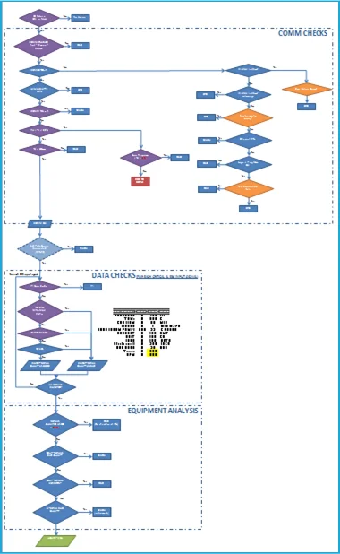
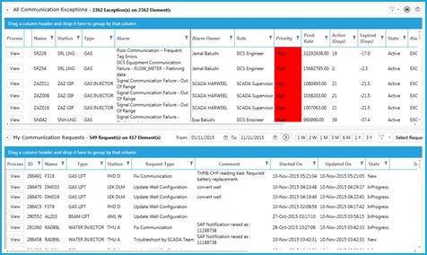
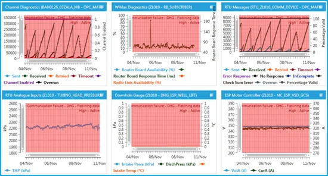

Exception Based Surveillance for Data Quality
Bad data is a root‑cause problem, not a symptom problem — this case study treats it that way.
Real‑time data communication from sensor to desktop is monitored for any faults that lead to data quality issues — flatlining data, out‑of‑range values, and intermittent data communications — each needing its most likely root cause identified, rather than just its symptom treated.
A system that analyzes the onsite power supply, the RTU configuration, the telecommunication towers, the OPC Server configuration, the OSI PI tag configuration and the Nibras system configuration together — to identify the most likely root cause of a data quality problem, instead of chasing the symptom.
- 20% year‑on‑year data quality improvement
- $16M USD saved by un‑blinding tripped wells and, as a result, avoiding deferments
- Turned reactive support into proactive support
- Builds a knowledge base of data quality issues for reliability analysis
- Consistent scanning of all real‑time communications gives a magnitude assessment of any reported issue
- Avoided repeated analysis by different disciplines through clear definition of roles and responsibilities



Backed by Wells Management's E‑Well Book.
The consolidated data layer that makes root‑cause analysis possible.